Armour
Every set and piece, how much it protects you and how much radiation it keeps out.
You wear five pieces: head, body, legs, feet and an accessory. Protection is the share of incoming damage each piece stops, and the pieces add up. Radiation shield works the same way for radiation. Protection is capped at 80% and radiation shielding at 90%, however much you stack.
Mixing sets is fine. Wear a piece by right-clicking it in your bag. Most wastelander sets are made at the Armour Bench, and Plate and Patch in the Hull sells whole sets.
Sets at a glance
| Set | Protection (full set) | Radiation shield | Pieces |
|---|---|---|---|
| Hazmat | 9% | 78% | Hazmat Hood, Hazmat Suit, Hazmat Pants, Rubber Boots |
| Patchwork | 18% | 0% | Patchwork Cap, Patchwork Jacket, Patchwork Trousers, Patchwork Shoes |
| Raider | 30% | 0% | Raider Helmet, Raider Vest, Raider Leggings, Raider Boots |
| Scavenger Rig | 40% | 0% | Welder Mask, Tyre Harness, Hose Greaves, Work Boots |
| Metal | 52% | 0% | Metal Helmet, Metal Armour, Metal Leg Guards, Metal Boots |
| Riot | 53% | 0% | Riot Helmet, Riot Vest, Riot Greaves, Riot Boots |
| Bone Raider | 58% | 0% | Skull Helm, Bone Harness, Spiked Leggings, Bone Boots |
| Road Captain | 65% | 5% | Hockey Helm, Plate Duster, Chain Greaves, Steel Toe Boots |
| Combat | 69% | 0% | Combat Helmet, Combat Armour, Combat Leg Guards, Combat Boots |
| Guild Plate | 78% | 14% | Guild Helm, Guild Plate, Guild Greaves, Guild Boots |
Every piece
| Piece | Set | Slot | Protection | Radiation shield | Value | Where to get it |
|---|---|---|---|---|---|---|
| Hazmat Hood | Hazmat | Head | 2% | 18% | 23 | Crafted at Armour Bench; Sold at Plate and Patch (Hull reputation 2) |
| Hazmat Suit | Hazmat | Body | 3% | 30% | 37 | Crafted at Armour Bench; Sold at Plate and Patch (Hull reputation 2); Sold at Reclaimers' Lodge |
| Hazmat Pants | Hazmat | Legs | 2% | 18% | 23 | Crafted at Armour Bench; Sold at Plate and Patch (Hull reputation 2) |
| Rubber Boots | Hazmat | Feet | 2% | 12% | 17 | Crafted at Armour Bench; Sold at Plate and Patch (Hull reputation 2) |
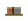 Patchwork Cap | Patchwork | Head | 3% | 0% | 7 | Crafted at Armour Bench; Sold at Plate and Patch |
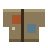 Patchwork Jacket | Patchwork | Body | 8% | 0% | 19 | Crafted at Armour Bench; Sold at Plate and Patch; Reward: Something Warm |
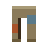 Patchwork Trousers | Patchwork | Legs | 5% | 0% | 12 | Crafted at Armour Bench; Sold at Plate and Patch |
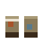 Patchwork Shoes | Patchwork | Feet | 2% | 0% | 6 | Crafted at Armour Bench; Sold at Plate and Patch |
| Raider Helmet | Raider | Head | 6% | 0% | 14 | Crafted at Armour Bench; Sold at Plate and Patch |
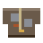 Raider Vest | Raider | Body | 12% | 0% | 29 | Crafted at Armour Bench; Sold at Plate and Patch |
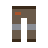 Raider Leggings | Raider | Legs | 8% | 0% | 19 | Crafted at Armour Bench; Sold at Plate and Patch |
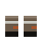 Raider Boots | Raider | Feet | 4% | 0% | 10 | Crafted at Armour Bench; Sold at Plate and Patch |
| Welder Mask | Scavenger Rig | Head | 7% | 0% | 17 | Crafted at Armour Bench; Sold at Plate and Patch |
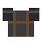 Tyre Harness | Scavenger Rig | Body | 16% | 0% | 38 | Crafted at Armour Bench; Sold at Plate and Patch |
| Hose Greaves | Scavenger Rig | Legs | 11% | 0% | 26 | Crafted at Armour Bench; Sold at Plate and Patch |
| Work Boots | Scavenger Rig | Feet | 6% | 0% | 14 | Crafted at Armour Bench; Sold at Plate and Patch |
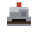 Metal Helmet | Metal | Head | 10% | 0% | 24 | Crafted at Armour Bench; Sold at Plate and Patch |
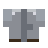 Metal Armour | Metal | Body | 20% | 0% | 48 | Crafted at Armour Bench; Sold at Plate and Patch |
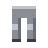 Metal Leg Guards | Metal | Legs | 14% | 0% | 34 | Crafted at Armour Bench; Sold at Plate and Patch |
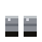 Metal Boots | Metal | Feet | 8% | 0% | 19 | Crafted at Armour Bench; Sold at Plate and Patch |
| Riot Helmet | Riot | Head | 11% | 0% | 26 | Sold at Plate and Patch; Sold at Harbour Guard HQ; Dropped by Sniper; Reward: Hold the Line |
| Riot Vest | Riot | Body | 20% | 0% | 48 | Sold at Plate and Patch; Sold at Harbour Guard HQ; Dropped by Raid Chief; Reward: Hold the Line |
| Riot Greaves | Riot | Legs | 14% | 0% | 34 | Sold at Plate and Patch; Sold at Harbour Guard HQ |
| Riot Boots | Riot | Feet | 8% | 0% | 19 | Sold at Plate and Patch; Sold at Harbour Guard HQ |
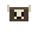 Skull Helm | Bone Raider | Head | 12% | 0% | 29 | Crafted at Armour Bench; Sold at Plate and Patch (Hull reputation 2) |
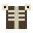 Bone Harness | Bone Raider | Body | 22% | 0% | 53 | Crafted at Armour Bench; Sold at Plate and Patch (Hull reputation 2) |
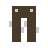 Spiked Leggings | Bone Raider | Legs | 15% | 0% | 36 | Crafted at Armour Bench; Sold at Plate and Patch (Hull reputation 2) |
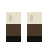 Bone Boots | Bone Raider | Feet | 9% | 0% | 22 | Crafted at Armour Bench; Sold at Plate and Patch (Hull reputation 2) |
| Hockey Helm | Road Captain | Head | 13% | 0% | 31 | Crafted at Armour Bench; Sold at Plate and Patch (Hull reputation 4) |
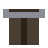 Plate Duster | Road Captain | Body | 25% | 5% | 65 | Crafted at Armour Bench; Sold at Plate and Patch (Hull reputation 4) |
| Chain Greaves | Road Captain | Legs | 17% | 0% | 41 | Crafted at Armour Bench; Sold at Plate and Patch (Hull reputation 4) |
| Steel Toe Boots | Road Captain | Feet | 10% | 0% | 24 | Crafted at Armour Bench; Sold at Plate and Patch (Hull reputation 4) |
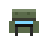 Combat Helmet | Combat | Head | 14% | 0% | 34 | Crafted at Armour Bench; Sold at Plate and Patch (Hull reputation 4); Sold at Harbour Guard HQ (Hull reputation 3) |
| Combat Armour | Combat | Body | 26% | 0% | 62 | Crafted at Armour Bench; Sold at Plate and Patch (Hull reputation 4); Sold at Harbour Guard HQ (Hull reputation 3) |
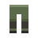 Combat Leg Guards | Combat | Legs | 18% | 0% | 43 | Crafted at Armour Bench; Sold at Plate and Patch (Hull reputation 4); Sold at Harbour Guard HQ (Hull reputation 3) |
| Combat Boots | Combat | Feet | 11% | 0% | 26 | Crafted at Armour Bench; Sold at Plate and Patch (Hull reputation 4); Sold at Harbour Guard HQ (Hull reputation 3) |
| Guild Helm | Guild Plate | Head | 16% | 2% | 2 | Crafted at Armour Bench |
| Guild Plate | Guild Plate | Body | 30% | 8% | 2 | Crafted at Armour Bench |
| Guild Greaves | Guild Plate | Legs | 20% | 2% | 2 | Crafted at Armour Bench |
| Guild Boots | Guild Plate | Feet | 12% | 2% | 2 | Crafted at Armour Bench |
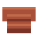 Crabshell Vest | - | Body | 30% | 15% | 87 | Dropped by The Wrack Mother |
| Gas Mask | - | Head | 2% | 26% | 31 | Crafted at Armour Bench; Sold at Reclaimers' Lodge |
| Geiger Band | - | Accessory | 0% | 12% | 12 | Crafted at Armour Bench; Sold at Plate and Patch; Sold at Reclaimers' Lodge; Reward: Dead Air |
| Harpooners Coat | - | Body | 22% | 10% | 2 | Crafted at Armour Bench |
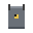 Lead Apron | - | Body | 10% | 40% | 64 | Crafted at Armour Bench |
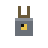 Lead Pendant | - | Accessory | 0% | 8% | 8 | Crafted at Armour Bench; Sold at Plate and Patch |
| Lead-Lined Coat | - | Body | 12% | 50% | 79 | Found at the end of Pylon 3 |
| Leadweave Cloak | - | Body | 14% | 45% | 2 | Crafted at Armour Bench |
| Loss Prevention Vest | - | Body | 26% | 5% | 67 | Found at the end of MegaMart |
| Raider Totem | - | Accessory | 8% | 0% | 19 | Sold at Plate and Patch |
| Runner Wraps | - | Accessory | 0% | 0% | 6 | Crafted at Armour Bench; Sold at Plate and Patch; Reward: Eyes in the Pines |
| Skull Necklace | - | Accessory | 6% | 0% | 14 | Crafted at Armour Bench; Sold at Plate and Patch; Reward: Bones for the Gate |
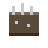 Spiked Bracer | - | Accessory | 5% | 0% | 12 | Crafted at Armour Bench |